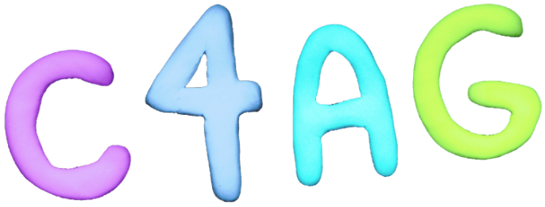
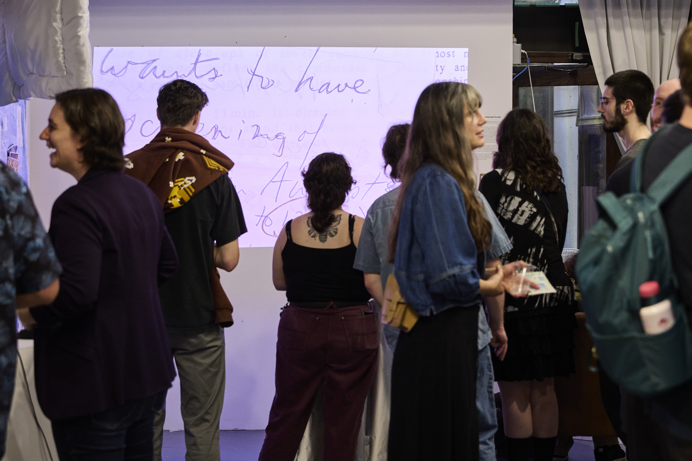
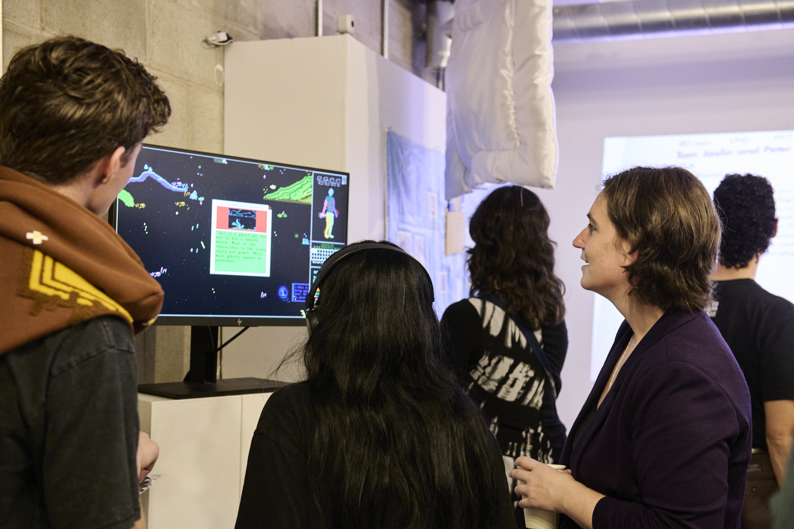
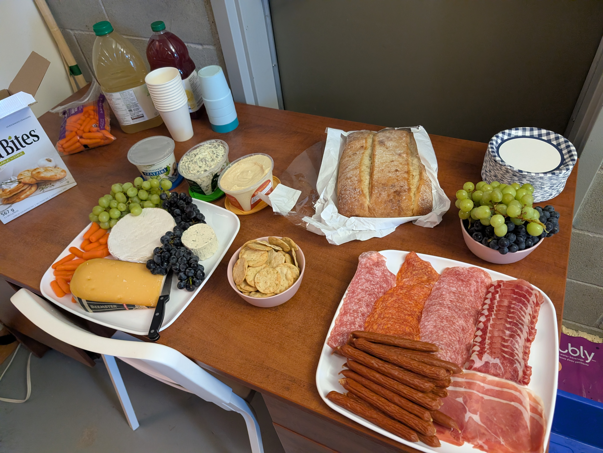
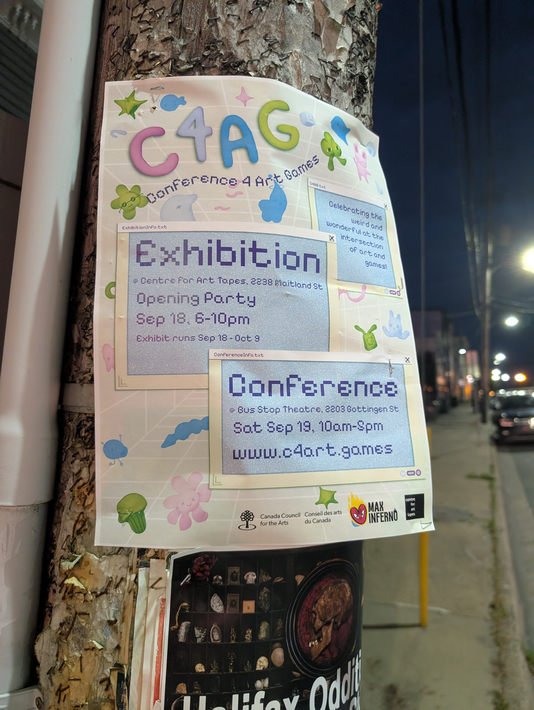
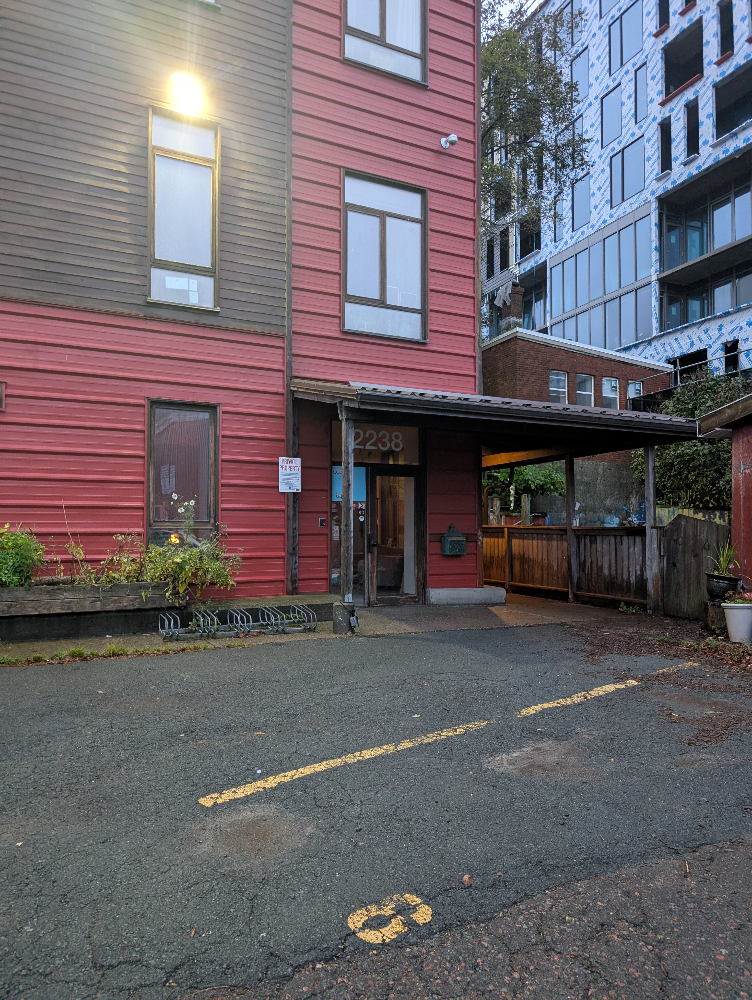
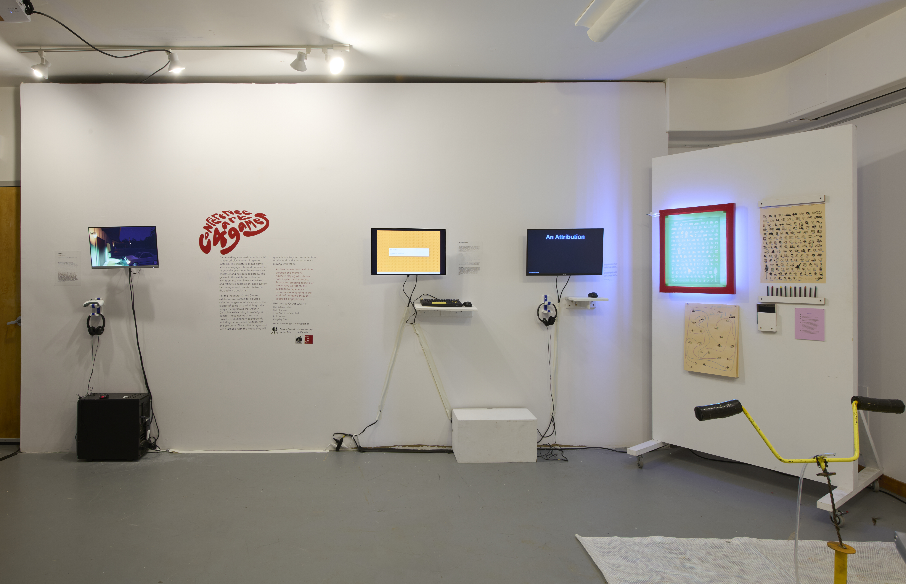
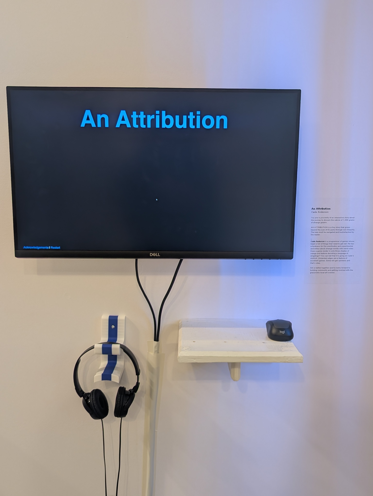
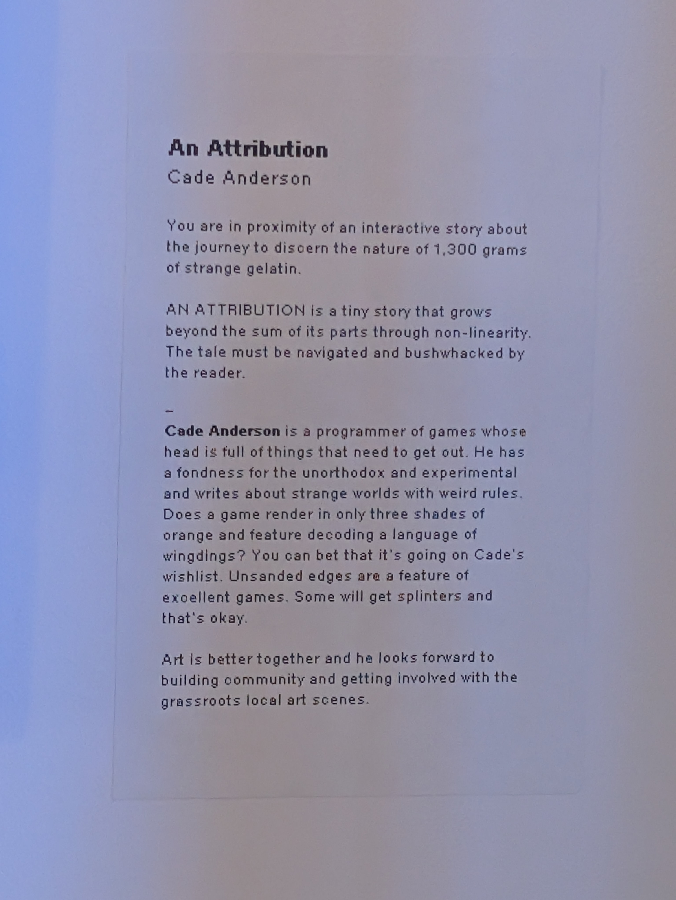

Center 4 Art Games
This was an event hosted at the Center for Art Tapes.

For a number of weeks, a game I made was on display at a physical location. That's pretty neat.
I happened across the call for submissions while online and knew it was a great opportunity. Not often do I get the chance to do the thing I love (make video games) while doing the thing that I love (meeting new, cool, likeminded people) while doing the thing that I love (having new, cool, likeminded people play the video game that I made).

I knew I didn't have a lot of time when ideating the project. I was going to miss the final few weeks before submission due to a vacation. I resolved to keep scope tiny. Itty bitty. Boy am I glad I did.
It took me quite a lot of time to find a topic I liked. I was seeking to create something in-line with the organization's vision for the event without sacrificing any enthusiasm on my part. I resultantly drew upon deep and old experiences from my life and made the case for why games were so important for me in my youth. Games were more than vehicles for fun.
This was new for me. I'm not typically as introspective or referential to mine own self in my works. I gravitate toward the fantastical - anything that isn't here - on earth - from the perspective of my fleshy human body. I get enough of that on the reg.
I finalized and sent off my Version 1.0 to the groovy folks at C4AT the night before I stepped aboard my family-bound plane. A number of weeks later I received news that my piece had been selected.
It was a great opening night. I met great people. I played some games oozing with delectable author intent. I wrote something meaningful to myself and evidently at least a few others. I've never done anything like this before and it was a really gratifying and rewarding experience. I also helped set up the snack table during the opening night. My auxiliary claim to fame.

The exhibit is now closed but the memories are open. I am making my piece of it available to one and/or all.
Now, please separate your mind from your corporeal form. Imagine, for a time, that you are a person in real life. A poster catches your eye and you immediately know where you need to be.

You are approaching the building. You are grasping the door handle.

You are inside.



Special thanks to the cool people I met along the way: Izzie, Cat, Emerson, Sabrina, Ray, Em, Emily, and everyone who took the time to visit the Center.